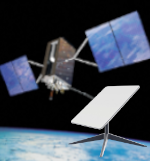
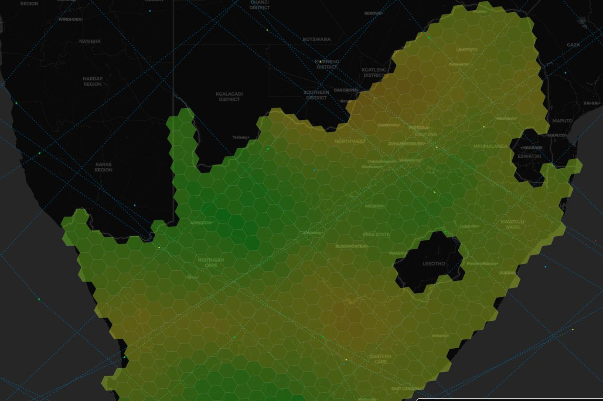

In this article, I would like to discuss Starlink GPS implementation, potential problems, and ways to improve.
Let’s agree that the paper will focus on GNSS in general, but for convenience, I will call it GPS.
{kind=link}
But first…
Why does Starlink need GPS?
To successfully communicate with satellites, the Starlink terminal requires the position of each satellite with the ability to predict this position. The Starlink antenna is not moving much but uses a phased array to steer a narrow RF beam electronically and point to the required satellite in the sky.
It’s relatively easy to calculate a given satellite position with TLE data. You only need the latest TLE data, station coordinates, and precise time. And that’s where GPS comes into play.
Starlink uses a built-in GPS receiver as a source of coordinates and time to calculate the position of the satellites in the sky. Also, GPS provides a stable time pulse (1PPS) to discipline clocks. The correct clock is crucial since Starlink uses time-division access and provides a schedule for all terminals in a given cell.
After turning on and booting, the Starlink terminal starts the “sky search” procedure. Basically, it scans the whole sky, looking for familiar signal bursts. Then, after successful network entry, Starlink can download the latest TLE from the “constellation” data server (which is unavailable on the internet). From this moment, it’s possible to calculate the precise position of all Starlink satellites and support stable sessions based on the network schedule.
Thus, Starlink should acquire GPS position and time (GPS fix) before the “sky search” procedure. If the fix is not available, Starlink will stuck in the “booting” state.
This state is somehow misleading. The Starlink terminal is fully booted but stuck on some top-level initialization procedure. It might be a lack of the GPS Fix or some problem with the antenna array (failed self-calibration). Always check “debug data” to find what’s gone wrong.
{kind=link}
{kind=link}
Starlink without GPS
It’s not a secret that the Starlink constellation could be used for navigation. Starlink terminal can be switched from using GPS data to its constellation data. There is a special switch in the Starlink mobile app.
{kind=link}
This option is super helpful when you don’t have a stable GPS reception or GPS data is not trustworthy. Civilian GPS is vulnerable and could be jammed or spoofed in some locations. Or the GPS receiver could be broken. Using Starlink constellation allows using Starlink in such conditions.
But everything comes with a cost. Calculating position based on Starlink constellation requires more resources, and it’s not so fast. Plus, It can’t be used correctly in motion. Accumulated errors may be so significant that Starlink will not be able to work.
Starlink GPS implementation
All versions of the Starlink terminal use an automotive-grade Teseo GNSS receiver from the ST.
This is a multisystem GPS/Galileo/GLONASS/BeiDou/QZSS receiver. It’s pretty reliable and feature-packed. But of course, it’s jammable, plus it’s relatively easy to damage built-in LNA with a strong enough RF signal. So, never try to radiate your Starlink terminal from a short distance with a GPS jammer/spoofer.
On the original round Dishy (rev1_), SpaceX used a much more powerful STA8090 with an external flash memory. Then, they switched to a cheaper solution with STA8089.
{kind=link}
Both ICs have a similar NMEA interface and could be configured to provide specific data for different GNSS constellation usage. In this article, I will not share the exact configuration Starlink uses.
Antennas also differ. Some users noticed that round UTs (rev1 and rev2) are getting GPS faster, even in bad conditions. This is not surprising.
Round Starlink terminal (rev1 and rev2) was much bigger with plenty of space. Thus, there, we can see a quarter wavelength patch antenna. The gain is unknown.
{kind=link}
On the most common square terminal (rev3), SpaceX switched to a compact ceramic chip antenna. There are two known versions of this antenna.
{kind=link}
This is a low-gain (~3 dB) omnidirectional antenna. They don’t have a lot of free space on the rev3 PCB, so I guess this cheap antenna was the best choice. It works in most cases.
The main problem with the Starlink GPS antenna is not the low gain but the radiation pattern that allows this antenna to “hear” everything: satellites in the sky and possible jamming/spoofing sources nearby.
Also, both antennas are linearly polarized, but GNSS signals are circularly polarized. Thus, the Starlink antenna loses some fraction of the useful signal. At the same time, it might be more sensitive to a jam signal that propagates in the same polarization plane.
{kind=link}
Typically, this leads to a forever “booting” state or damaging the STA8089 IC in the worst-case scenario.
Fortunately, many issues could be fixed with a proper external GPS antenna or even a CRPA antenna (if there are some special requirements).
Alternative antenna
It’s possible to connect both passive and active patch-antenna. Circular polarized directional patch Antenna could provide better protection from jamming signals and faster GPS lock. In the case of jamming protection, I mean sources that are placed somewhere far from the main lobe of the antenna. Actual sidelobe suppression depends on antenna type. As an example, I will use the rev3_prot2 user terminal.
The external antenna cable could be connected directly to the Starlink PCB instead of the chip antenna. There is a convenient 50-ohm feed line.
First, remove the chip antenna. Second, solder coaxial cable directly to the PCB. It’s convenient to solder cable shielding to the bottom ground pin.
Please try to secure the cable somehow to avoid the pads ripping off.
{kind=link}
The cable could be connected directly to a passive external antenna or to Bias-T to power an active antenna. It’s possible to use Bias-T with the passive antenna. Just be careful and don’t short it to the ground.
{kind=link}
It’s convenient to get 3.3 volts from the Dishy PCB. There is a voltage regulator nearby. It’s capable of providing enough power for one more little device.
{kind=link}
I used a popular and cheap Bias-T module. It’s good enough and works nicely on 1575 MHz. It’s possible to glue this module directly to the Dishy heatsink. The position was adjusted, so it’s still possible to install a back cover of the user terminal. Sitting on the top side, this module doesn’t affect the heatsink performance much.
{kind=link}
In this design, an additional water-proof SMA connecter was mounted to the backside. This allows easy disconnect and swaps of GPS antennas.
{kind=link}
{kind=link}
I run tests with three GPS antennas. Numbers 2 and 3 are very similar inside. Test conditions were intentionally non-optimal, with a partially blocked sky.
{kind=link}
Here are the results in comparison to the standard chip antenna:
| Antenna | Uptime to GPS Fix | Number of satellites | GPS valid (sky search started) |
|---|---|---|---|
| Built-in chip | 3 minutes | 5 | Yes |
| 1 | 30 seconds | 10 | Yes |
| 2 | 30 seconds | 10 | Yes |
| 3 | 45 seconds | 13 | Yes |
As you can see, all external active antennas provide faster startup time and more satellites, which might be important in some cases.
My friends helped to test this modification in the area with constant suppression of the GPS bands. Thanks, Team 14 😉
In addition to signal suppression, the test site wasn’t optimal with additional obstacles.
Two devices took part in the testing: an unmodified one and one with an external active antenna. The results are below.
| User terminal type | Uptime | Number of satellites | Online |
|---|---|---|---|
| Unmodified | 2 minutes | 0 | No |
| Unmodified | 5 minutes | 0 | No |
| Unmodified | 30 minutes | 0 | No |
| Modified, active GPS antnenna | 2 minutes | 13 | Yes |
| Modified, active GPS antnenna | 5 minutes | 17 | Yes |
| Modified, active GPS antnenna | 30 minutes | 15 | Yes |
Additionally, it’s possible to integrate a small passive patch antenna into Dishy in the case of custom (automotive) housing.
This antenna has a relatively small gain, but it still provides good enough amplification and directivity.
{kind=link}
It looks scary, but it’s safe to cut PCB here to fit the antenna carefully.
{kind=link}
Result – 11 satellites and Online in less than a minute:
{kind=link}
Thanks for reading!
Thank you so much for this timely new addition to your excellent Starlink hack series. Since doing the direct-to-12-volts modifications, and the flat mounting, I have had major issues with booting, in large part because I initially used an aluminium sheet to close the bottom of the dishy. The aluminum prevented proper operation of the gps antenna. After realizing the source of the problem, and cutting away near the chip, it started working better, but long connecting times remained a serious issue for my automotive installation. Your latest hack is exactly what I needed! I owe you a beer, or two! Do you have a support mean for donation?
You’re always welcome 🙂 Happy to share useful information.
You can do a PayPal transfer to my email contact@olegkutkov.me if you wish to donate 🙂
Велике спасибі за дослідження! Але я хочу знати, який чіп завершується модуляцією/демодуляцією користувацького терміналу? Я довго шукав і не знав, де це було.
Modem is inside the SoC, not a separate chip.
Hello. I have the Problem that my dishy says now for days invalid GPS. gpsStats”: {
“gpsValid”: false,
“gpsSats”: 0,
“noSatsAfterTtff”: true,
“inhibitGps”: true
So ist Not working in Motion now. We are on nepale in a Road Trip with our Campervan and i have No Chance to get a new dishy. Reset was Not helping. It’s gen 2 dishy the square. I ASK myself is the antenna the Problem or the GPS Chip. Thanks for your work. My e-mail ist renekreher@googlemail.com.
One Web terminal ready for external GNSS connection: https://www.satellitetoday.com/technology/2023/09/11/onewebs-new-military-and-emergency-response-terminal-can-fit-inside-a-backpack
Is there a way to hack starlink’s ability to see in-motion and /or fix geo location. Having issue with the 100mph cap on starlink high performance flat dish.
Дуже дякую за статтю.
Ви пишете що без gps термінал не завантажується Але До мене в руки попав Starlink 2 який успішно працює без GPS.
Я не можу зрозуміти це випадковість чи термінал обновився і тепер термінал може працювати з пошкодженим gps
Якщо там GPS взагалі не працює – термінал може стартанути и без нього. Особливо краще з цим стало з новими прошивками.
Але він у вас, скоріш за все, не зможе працювати у русі.
Дякую за відповідь.
На даний момент моя думка по цьому терміналу змінилась так як при сонячній погоді він все ж таки показав GPS в Debug Data скоріш за все він все ж стартує як тільки хоть на якийсь момент зловив GPS а потім працює і без нього…
Прошу порадити з чого почати ремонт даного терміналі (перепаяти антену з донору)?
Ремонтирую понемногу терминалы, иногда приходят с мертвым GPS (возможно после РЭБ). И вот в чем вопроc – не получается заменить GPS чип ST8089 с донора! Все равно не видит спутники. Толи я их успешно убиваю при пересадке (хотя BGA паяю профессионально, в т.ч. Бимформеры), толи прошивка 8089 как-то привязана к серийнику антенны? Смотрел на обмен проца с ним – вначале проц “договаривается” с ним, отсылает кучу каких-то конфигурационных данных и потом ждет обычный ответ NMEA в виде $GPGSA,A,1,,,,,,,,,,,,,99.0,99.0,99.0*00. Но почему всегда 0 спутников? А иногда помогает просто пропайка ST8089 без замены… Или может то вовсе не выбитые РЭБом чипы, а искать что-то еще? Эмулировать NMEA неужели нельзя?
Прошивка STA8089 никак не привязана. Более того, можно ставить чипы добытые не только из старлинка.
Мертвые GPS чипы – это очень распространенная проблема. В том числе они иногда бывают мертвыми с завода 🙂 Бывают и проблемы с пропайкой, да.
Скорее всего у вас на доноре уже спаленный чип. Тоже нередко приходится их перепаивать, иногда приходится перебрать несколько чипов, пока не заработает.
Если чип заводится, но сообщает 0 спутников – значит у него что-то с RF фронтом, или встроенный LNA сгорел (чаще всего) или проблема с фильтром/антенной. Проверяйте внимательно, что ничего не поплыло и что на антенне, на пинах, нет “мостика” из припоя или флюса.
Эмуляция NMEA – отдельная большая тема, которую я бы не очень хотел тут обсуждать 🙂
Антену и мелочевку по входу тоже пересаживал (правда только на одной) – не помогло.
STA8089 брал штук 4-5 с разных доноров, теоретически хоть пару да работать должны были. может паяльником при лужении убиваю LNA – не заземлена станция. Попробую в след. раз заземлить все что можно…
“мостика” из припоя – всмысле КЗ на пинах 8089? Пара раз сажал на свинец, аккуратно. И немного не доганяю конструкцию антенны – контакты 1 и 2 у нее это один большой вывод (там где точка на синей антенне), как у всех компонентов типоразмера 1206. Почему ж тогда контакты 1,2 разделены на плате?
Та же фигня уже пару заменил результат никакой!!!!
Hello. Thank for all informations. I have much dishy whit a same problem. GPS.
I think send nmea data using ublox module. But i don’t sniff the serial port to discovery the serial rate and nmea messages to use. What you think about this ?
Att. Bau
Hello. You can’t do it directly. STA8089 has proprietary NMEA extensions that Starlink relies on.
I have a stationary Starlink setup, and it works well.
However, GPS isn’t pinpoint accurate, could this impact performance? Would the Starlink constellation be more accurate and better for a stationary setup? Or would the downsides outweigh any benefits?
Hello,
No, GPS does not affect performance during the Stationary Starlink operation. It is only required on boot and in motion.
Hello friend, thank you very much for all the information, the GPS on my rev3 is not operating normally after putting it in a vehicle adaptation, I found some internal antennas in Brazil for sale, could you tell me if any of these 2 would be suitable for exchange, very grateful.
https://produto.mercadolivre.com.br/MLB-3111735866-antena-glonas-topgnss-gps-28db-conector-ipx-287mm-_JM
https://loja.smartcore.com.br/antena-gnss-gps-glonas-patch-ceramica-ativa-25x25mm-cabo-100mm-conector-ufl-angnss-ia-25-100mm-ufl-js
Hello,
You can use both antennas. But you will need the bias-t board to provide power for the antenna. There is LNA inside.
Mr. Oleg thanks for your contribution!
I’m on the go and I’m unable to get a replacement for my Dish 2. I’ve a GPS not valid in the debug.
After removing the chip antenna, the center conductor of the GPS’s cable must be connected in the input PIN.
My question is, the conducting shield of the cable, must be soldered to both the second PIN and ground PIN?
Thank you
Regads
Daniel
Hello,
There are only center/signal and ground pins. Both second and third pins are GND. You can connect at your convenience.
But typically, GPS is not working due to poor soldering of the GPS chip under the metal can.
I see.. So this fix won’t be the solution for the GPS not valid error.
It’s a GPS chip problem, not the antenna.
Thanks for your explanation
Regards
Daniel
Доброго дня. Скажить будь ласка, який пасивний GPS краще встановити ? Дякую за Вашу працю i допомогу.
Вітаю. Будь яка патч антена, накшталт: http://www.kosmodrom.com.ua/el.php?name=BY-GPS-GLONASS-254-PCB
Проблема в тому, що пасивні дуже важко знайти, хіба що взяти дешеву активну, та припаяти кабель напряму на патч, прибравши підсилювач (якщо потрібна саме пасивна).
Hello Oleg I am having issues with my GPS not being valid, and I’m suspicious it’s bad soldering what is the chance of success if I open my dish and reheat the solder for the antenna?
Hello. You need to rework the GPS chip under the metal can (near the GPS antenna).
How can I safely remove the metal can because it looks like it’s riveted in, not screwed it?
Use a hot air gun and a scalpel (or sharp knife) to pry and lift the can from one of the edges. Do it slowly and carefully.
Thank you, I have one last question what do you use to seal the dish back up?
I use gray automotive sealant (for headlights).
Hi Oleg,
I accidentally ripped off the gps antenna input pad 🙁 is there another place i can pick up the connection? Ty
Oleg, this is a great project. I’m also interested in what application you’re using to see the gps statistics in the final picture. I’ve got the starlink app on my phone but it doesn’t provide those metrics, also it appears that starlink are now deprecating the web browser interface. Could you tell me more about the application please?
It’s the Ukrainian app StarDebug:
Android: https://play.google.com/store/apps/details?id=com.stardebug&hl=uk&gl=US
iOS: https://apps.apple.com/ua/app/star-debug/id6449881082
Thank you.
Hey Oleg, would this work to change out GPs location to a neighbouring country. In my southern African country, Starlink is not approved and starlink recently said that roaming would be end for countries that are not approved. However, our neighbour country is approved for starlink.
Would this be possible ?
Hi Bruce,
Unfortunately not. Your Starlink will only work somewhere near the border with that country.
It’s not about GPS. It’s just that Starlink satellites block all connections from disabled cells on the ground. The satellite knows where it is flying now and which cell is forbidden. It doesn’t care about the terminal’s GPS state.
Hello Oleg, ah bugger. Well it was worth a shot. Is there any idea how close to the border ones needs to be?
It depends on the blurring of the satellite’s spot. It could be hundreds of meters, sometimes a kilometer or two.

Hey Oleg interesting, do you have the cells map for Zimbabwe/Mozambique?
Ah okay, so it won´t be like 50 kms from the border? Needs to be very close like within 1-2 km at most
Yep. Cell size is 22 km. Some cells overlap countries’ borders. Plus, there is some natural blurring of the satellite’s spot. So, they can’t magically disable the signal on the border.
You can use starlink.sx to get the cell’s map.
Legndary, thanks Oleg. Keep up the great work
Hello Oleg can you please tell me what temperature and flow I would need to set on my heat gun to remove the metal can in front of the GPS chip and what temperature and flow I would need to set, so I can rework the GPS chip also do I need to reattach the metal can afterward or is it not necessary?
Hello Oleg i have a starlink v2 works in may area for about a month with no problem and then suddenly stoped,I figure out the problem in gps has locked, then i moved to anthor area 20km distance from my home , it works again, can you help me, how can hack the Gps chip and make it sending a fixed location data
I am an electronics engineer
You have a huge experience on that
This is my email Ha.alkahali@gmail.com
Thank you for you informations
Hello.
Starlink terminal is not sending anything, and satellites don’t care about the terminal’s local data. The satellite knows its position.
Please read the comments above. I explained why it happens (and why it’s ~20 km).
Hello Oleg. I copied and pasted the unanswered questions from another commenter.
Can you please tell me what temperature and flow I would need to set on my heat gun to remove the metal can in front of the GPS chip and what temperature and flow I would need to set, so I can rework the GPS chip also do I need to reattach the metal can afterward or is it not necessary?
Hello Oleg, I have been thinking about buying these STA8089, as I am having several problems. Not everyone can be resolved with a weld rework. Some solutions were solved by placing a patch antenna, directly in place of the micro antenna, just feeding it 3.3V and adding a small inductor, without using BIAS-T. This STA8089 is very expensive for Brazil. Is there any other model that works and is cheaper? Another question, when the STA8089 is off the board, in your APP I didn’t see a place that shows whether the chip is communicating or not. I only see it when it tracks satellites.
Thank you for all the past knowledge!